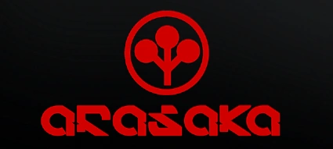

Arasaka Terminal
Accés constant a dades corporatives (linear).
Interfícies neon, fluxos de dades i contractes de fixers. Benvingut/da.
explore Entrar a la xarxaHover per canviar color, ombra, escala i imatge. Cada targeta té el seu tempo.
Accés constant a dades corporatives (linear).
Entrada suau a transaccions clandestines (ease-in).
Ritme equilibrat de patrulla (ease-in-out).
Només estil: transició de color i letter-spacing.